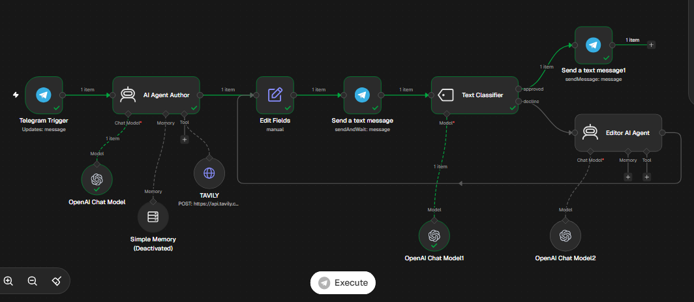

FEATURED / AI BUSINESS AGENT
Shoe Store AI Agent
A Telegram-based AI agent built for a shoe store to handle customer conversations and support day-to-day sales operations. It can answer enquiries, recommend shoes, check availability and handle orders.
- Answers customer enquiries
- Recommends shoes
- Checks product availability
- Handles customer orders
- Schedules customer meetings
- Updates Google Sheets with leads
- Classifies interested and uninterested leads

Actual workflow screenshot · Shoe Store AI Agent